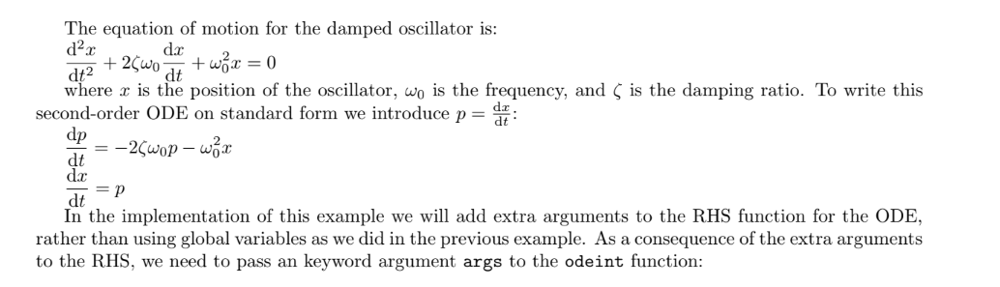
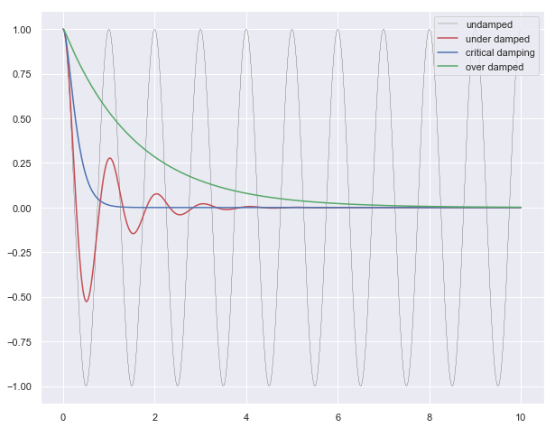

Introduction
Numerical Methods:
- Integration
- Differential Equations
Integration source
import numpy as np
from scipy.integrate import quad, dblquad, tplquad
$$ y = mx +c$$
def f(x):
return 5*x + 4
x_lower = 0 # the lower limit of x
x_upper = 1 # the upper limit of x
val, abserr = quad(f, x_lower, x_upper)
print("integral value =", val, ", absolute error =", abserr)
integral value = 6.499999999999999 , absolute error = 7.216449660063516e-14
Bessel function
from scipy.special import jn, yn, jn_zeros, yn_zeros
def integrand(x, n):
"""
Bessel function of first kind and order n.
"""
return jn(n, x)
x_lower = 0 # the lower limit of x
x_upper = 10 # the upper limit of x
val, abserr = quad(integrand, x_lower, x_upper, args=(3,))
print(val, abserr)
0.7366751370811073 9.389126882496403e-13
Gaussian function
val, abserr = quad(lambda x: np.exp(-x ** 2), -5.0, 5.0)
print("numerical =", val, abserr)
analytical = np.sqrt(np.pi)
print("analytical =", analytical)
numerical = 1.7724538509027912 4.6261378229003154e-14
analytical = 1.7724538509055159
def integrand(x, y):
return np.exp(-x**2-y**2)
x_lower = 0
x_upper = 10
y_lower = 0
y_upper = 10
val, abserr = dblquad(integrand, x_lower, x_upper,\
lambda x : y_lower, lambda x: y_upper)
print(val, abserr)
0.7853981633974476 1.3753098510218528e-08
Ordinary Differential Equations Source

Odent Source
from scipy.integrate import odeint, ode
def dy(y, t, zeta, w0):
"""
The right-hand side of the damped oscillator ODE
"""
x, p = y[0], y[1]
dx = p
dp = -2 * zeta * w0 * p - w0**2 * x
return [dx, dp]
# initial state:
y0 = [1.0, 0.0]
# time coodinate to solve the ODE for
t = np.linspace(0, 10, 1000)
w0 = 2*np.pi*1.0
# solve the ODE problem for three different values of the damping ratio
y1 = odeint(dy, y0, t, args=(0.0, w0)) # undamped
y2 = odeint(dy, y0, t, args=(0.2, w0)) # under damped
y3 = odeint(dy, y0, t, args=(1.0, w0)) # critial damping
y4 = odeint(dy, y0, t, args=(5.0, w0)) # over damped
plt.figure(figsize = [10,8])
plt.plot(t, y1[:,0], 'k', label="undamped", linewidth=0.25)
plt.plot(t, y2[:,0], 'r', label="under damped")
plt.plot(t, y3[:,0], 'b', label=r"critical damping")
plt.plot(t, y4[:,0], 'g', label="over damped")
plt.legend();

Partial Differential Equations
PDE : Eliptic Equation (Laplace Euation)
$$ \nabla^{2} u + c f(u) = 0 $$
$$\frac{\partial^{2}u}{\partial^{2}x} + \frac{\partial^{2}u}{\partial^{2}x} + cf(u) = 0$$
for $c=1, f(u)=0$ it becomes Laplace Equation

Using Above lattice of finite difference:

$$\large{u_{i−1,j}+u_{i+1,j} + u_{i,j−1} + u{i,j+1} − 4u_{i,j}+cf(u_{i,j})=0}$$
$$u_{i,j}=0; \forall u \in ∂Ω$$
for 4 by 4 lattice view matrices here: source
Problem Type : Solve
$$\large{Ax = b}$$
Implementation of Least square methods to solve a $Ax = b$ problem as a optimization problem
%matplotlib inline
import matplotlib.pyplot as plt
import numpy as np
from scipy.optimize import least_squares
from scipy.sparse import coo_matrix
import seaborn as sns
sns.set()
n = 100
c = 1
def f(u):
return u**3
def f_prime(u):
return 3 * u**2
Prepare the lattice
def fun(u, n,f, f_prime,c, **kwargs):
v = np.zeros((n + 2, n + 2))
#buttom value = 1
v[n+1,:] = 1
# top value = 1
#v[0,:] = 1
# center value = 1
#v[int(n/2),int(n/2)] = 1
u = u.reshape((n, n))
v[1:-1, 1:-1] = u
y = v[:-2, 1:-1] + v[2:, 1:-1] + \
v[1:-1, :-2] + v[1:-1, 2:] - \
4 * u + c * f(u)
return y.ravel()
Prepare Jacobians
def compute_jac_indices(n):
i = np.arange(n)
jj, ii = np.meshgrid(i, i)
ii = ii.ravel()
jj = jj.ravel()
ij = np.arange(n**2)
jac_rows = [ij]
jac_cols = [ij]
mask = ii > 0
ij_mask = ij[mask]
jac_rows.append(ij_mask)
jac_cols.append(ij_mask - n)
mask = ii < n - 1
ij_mask = ij[mask]
jac_rows.append(ij_mask)
jac_cols.append(ij_mask + n)
mask = jj > 0
ij_mask = ij[mask]
jac_rows.append(ij_mask)
jac_cols.append(ij_mask - 1)
mask = jj < n - 1
ij_mask = ij[mask]
jac_rows.append(ij_mask)
jac_cols.append(ij_mask + 1)
return np.hstack(jac_rows), np.hstack(jac_cols)
jac_rows, jac_cols = compute_jac_indices(n)
jac_rows, jac_cols
(array([ 0, 1, 2, ..., 9996, 9997, 9998]),
array([ 0, 1, 2, ..., 9997, 9998, 9999]))
def jac(u, n,f, f_prime,c, jac_rows=None, jac_cols=None):
jac_values = np.ones_like(jac_cols, dtype=float)
jac_values[:n**2] = -4 + c * f_prime(u)
return coo_matrix((jac_values, (jac_rows, jac_cols)), shape=(n**2, n**2))
u0 = np.ones(n**2) * 0.5
Optimization: Least Square
res_1 = least_squares(fun, u0, jac=jac, gtol=1e-3, args=(n,f, f_prime,c),\
kwargs={'jac_rows': jac_rows, 'jac_cols': jac_cols}, verbose=1)
`gtol` termination condition is satisfied.
Function evaluations 738, initial cost 1.1562e+02, final cost 6.4462e-01, first-order optimality 9.38e-04.
Returned quantities after solution
res_1.x.shape
(10000,)
res_1.x
array([0.00622038, 0.01236634, 0.01833963, ..., 0.01834064, 0.01236645,
0.00622026])
res_1.fun
array([-0.00014825, -0.00029118, -0.00041394, ..., -0.000414 ,
-0.00029121, -0.00014826])
res_1.fun.shape
(10000,)
res_1.jac
<10000x10000 sparse matrix of type '<class 'numpy.float64'>'
with 49600 stored elements in Compressed Sparse Row format>
Plot the solutions
plt.figure(figsize=(16, 5))
plt.subplot(131)
plt.plot(res_1.x)
plt.subplot(132)
plt.imshow(res_1.x.reshape((n, n)),\
cmap='coolwarm',\
vmin=-max(abs(res_1.x)),\
vmax=max(abs(res_1.x)))
plt.colorbar(use_gridspec=True,\
fraction=0.046,\
pad=0.04)
plt.subplot(133)
plt.plot(res_1.fun)
plt.tight_layout()

References:
- http://folk.ntnu.no/leifh/teaching/tkt4140/._main000.html
- http://folk.ntnu.no/leifh/teaching/tkt4140/._main055.html
- https://docs.scipy.org/doc/scipy/reference/generated/scipy.optimize.least_squares.html#scipy.optimize.least_squares